dl3_000_DARTSLIVE3 主要部品変更のお知らせ
本ページでは、メンテナンス時に影響が有ると思われる変更箇所をピックアップし、説明しております。
詳細は、購入物付属の「DL3-7101 取扱説明書」内、「11 部品リスト」を御覧ください。
■PC
<主な変更点>
●I/Oパネル（USB等の差込口）の配置が変更になりました。
後述する「I/Oパネル配置図」をご参照の上、各種ケーブルを接続してください。
※1 「I/Oパネル配置図」は“DL3PC（ICS-60B1-1A）の左側面にも貼られています。
※2 ロアーキャビへのPCの組付け方法に変更はありません。
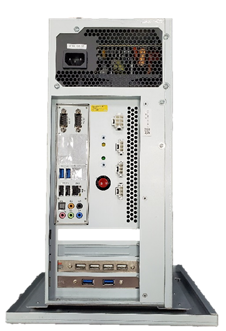
画像：DL3PC（DL3-4000）
※対象筐体：：UAA18*～UAB18*
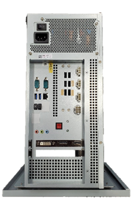
画像：DL3PC（ICS-60B1-1A）
※対象筐体：WAC19****～
PC I/Oパネル配置図(ステッカー)
●印刷内容が、DL3PC（ICS-60B1-1A）用デザインになりました。
※1 DL3PC（ICS-60B1-1A）には、左側面にも同ステッカーが貼られています。
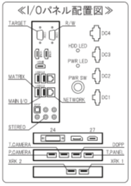
画像：DL3PC（DL3-4000）用デザイン
※対象筐体：：UAA18*～UAB18*
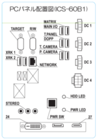
画像：DL3PC（ICS-60B1-1A）用デザイン
※対象筐体：WAC19****～
■タッチモニタ
<主な変更点>
●外観寸法が変更されました。
・シリアルNo. UAA18*～UAB18にDL3タッチパネル（L24G7LTMDL）をつけるには、 専用の追加ブラケット* が必要となります。
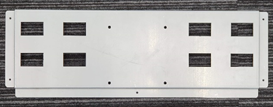
画像：追加ブラケット（DL3-1404 VESA MOUNT JOINT）
・シリアルNo.WAC19****～にDL3タッチパネル（P238HVM01.0）をつけるには、
専用のベース（DL3-1401 LOWER LCD BASE）に変更する必要があります。
●操作ボタンの位置が変更になりました。
新モニタは自動電源ON、ソース選択自動になりますので、原則使用しません。
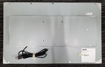
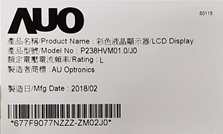
画像：DL3タッチパネル（P238HVM01.0）
※対象筐体：：UAA18****～UAB18＊＊＊＊
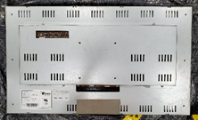
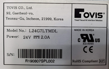
画像：DL3タッチパネル（L24G7LTMDL）
※対象筐体：WAC19****～
■モニター(上部)
<主な変更点>
・コネクタ接続部が変更となりました。
画像：DL3モニター(上部)（VA2718・VA2719）
※対象筐体：UAA18*～UAB18、WAC19***～WAI24
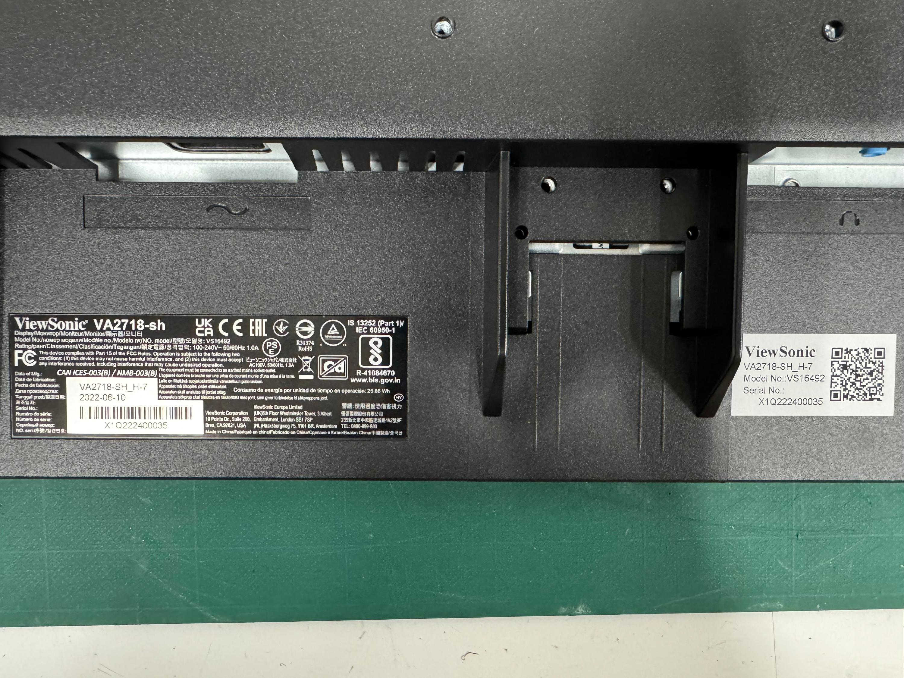
画像：DL3モニター(上部)（VX2776）
※対象筐体：WAJ25****～
(VX2776とVX2718は取付金具が異なります。交換の際はご注意ください)
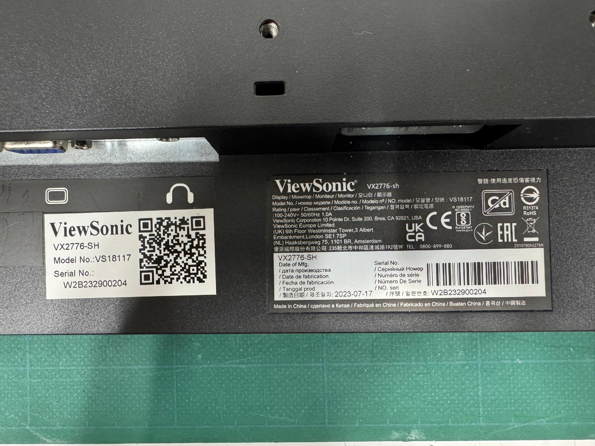
Last updated on July 9, 2025